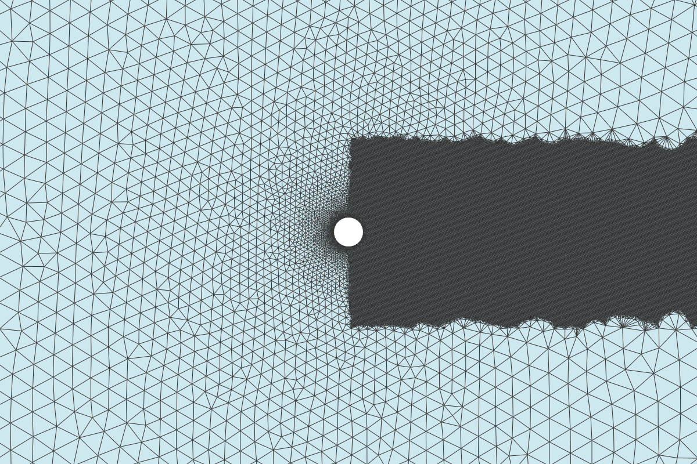

Code Notebook
All the source code behind the simulations, visualizations, and analysis: presented as a Jupyter-style notebook. The six sections below form a complete pipeline: ΦFlow exploration → SU2 configs → mesh generation → solver execution → visualization → orchestration. See the CFD Methodology page for the results this code produces.
The core of the ΦFlow simulation: define the domain as an 8m × 4m box, create a cylinder obstacle with an optional rotation rate, and run the incompressible Navier-Stokes solver using semi-Lagrangian advection.
import phi
from phi.jax.flow import *
from phi import field, math
# Domain
BOX = box['x, y'][:8, :4]
BOUNDARY = {'x': ('open', 'open'), 'y': ('periodic',)}
# Cylinder parameters
RADIUS = 0.3
CENTER = (2.0, 2.0)
CYLINDER = Sphere(x=CENTER, radius=RADIUS)
# Grid
v0 = StaggeredGrid((1.0, 0.0), BOUNDARY, x=256, y=128, bounds=BOX)
# Obstacle with optional rotation (rad/s)
ANGULAR_VELOCITY = 10.0 # set to 0.0 for knuckleball
obstacle = Obstacle(CYLINDER, angular_velocity=ANGULAR_VELOCITY)
# Simulation loop
DT = 0.015
N_STEPS = 2000
v = v0
for i in range(N_STEPS):
v = advect.semi_lagrangian(v, v, dt=DT)
v, p = fluid.make_incompressible(v, [obstacle])
# Extract forces, save frames, etc.
cylinder.cfg
SU2 config for steady-state RANS simulation of a 2D cylinder at Re=40,000. Uses the SST $k$-$\omega$
turbulence model with FDS convective scheme. Non-dimensional viscosity via INITIAL_VALUES.
SOLVER= INC_RANS
KIND_TURB_MODEL= SST
INC_DENSITY_MODEL= CONSTANT
INC_ENERGY_EQUATION= NO
INC_NONDIM= INITIAL_VALUES
REYNOLDS_NUMBER= 40000
REYNOLDS_LENGTH= 0.6
VISCOSITY_MODEL= CONSTANT_VISCOSITY
MU_CONSTANT= 2.5e-05
MARKER_HEATFLUX= ( wall, 0.0 )
MARKER_MONITORING= ( wall )
MARKER_FAR= ( farfield )
CONV_NUM_METHOD_FLOW= FDS
MUSCL_FLOW= NO
TIME_DISCRE_FLOW= EULER_IMPLICIT
CFL_NUMBER= 0.5
ITER= 3000
LINEAR_SOLVER= FGMRES
LINEAR_SOLVER_PREC= ILU
cylinder_unsteady.cfg
Unsteady laminar Navier-Stokes for vortex shedding at Re=120. Uses dual time-stepping with dimensional viscosity. The Magnus case adds a moving wall boundary condition for spin.
SOLVER= INC_NAVIER_STOKES
INC_DENSITY_MODEL= CONSTANT
INC_ENERGY_EQUATION= NO
INC_NONDIM= DIMENSIONAL
INC_DENSITY_INIT= 1.2886
INC_VELOCITY_INIT= (1.0, 0.0, 0.0)
VISCOSITY_MODEL= CONSTANT_VISCOSITY
MU_CONSTANT= 0.00267875
REYNOLDS_NUMBER= 120
REYNOLDS_LENGTH= 0.6
MARKER_HEATFLUX= ( wall, 0.0 )
MARKER_MONITORING= ( wall )
MARKER_FAR= ( farfield )
TIME_DOMAIN= YES
TIME_MARCHING= DUAL_TIME_STEPPING-2ND_ORDER
TIME_STEP= 0.15
TIME_ITER= 200
INNER_ITER= 15
CONV_NUM_METHOD_FLOW= FDS
MUSCL_FLOW= YES
SLOPE_LIMITER_FLOW= NONE
TIME_DISCRE_FLOW= EULER_IMPLICIT
CFL_NUMBER= 0.5
LINEAR_SOLVER= FGMRES
LINEAR_SOLVER_PREC= ILU
LINEAR_SOLVER_ERROR= 1E-6
LINEAR_SOLVER_ITER= 10
OUTPUT_FILES= (RESTART, PARAVIEW)
OUTPUT_WRT_FREQ= 1
HISTORY_OUTPUT= (TIME_ITER, INNER_ITER, RMS_RES, AERO_COEFF, CUR_TIME)
# Uncomment for Magnus effect (spin):
# SURFACE_MOVEMENT= MOVING_WALL
# MARKER_MOVING= ( wall )
# SURFACE_ROTATION_RATE= 0.0 0.0 3.33333
Programmatic mesh generation using gmsh's Python API. Distance-based refinement near the cylinder surface (for boundary layer resolution) combined with a Box field to concentrate cells in the wake region, where vortices form and need the highest resolution.
import gmsh
def cylinder_2d(radius=0.3, farfield_radius=15.0,
cl_cyl=0.01, cl_far=0.5,
cl_wake=0.04, wake_length=4.0, wake_width=1.0):
gmsh.initialize()
gmsh.model.add("cylinder_2d")
disk = gmsh.model.occ.addDisk(0, 0, 0, radius, radius)
farfield = gmsh.model.occ.addDisk(0, 0, 0, farfield_radius, farfield_radius)
ov, _ = gmsh.model.occ.cut([(2, farfield)], [(2, disk)])
gmsh.model.occ.synchronize()
# Distance-based refinement near cylinder
gmsh.model.mesh.field.add("Distance", 1)
gmsh.model.mesh.field.setNumbers(1, "NodesList", [surface_tag])
gmsh.model.mesh.field.add("Threshold", 2)
gmsh.model.mesh.field.setNumber(2, "InField", 1)
gmsh.model.mesh.field.setNumber(2, "SizeMin", cl_cyl)
gmsh.model.mesh.field.setNumber(2, "SizeMax", cl_far)
gmsh.model.mesh.field.setNumber(2, "DistMin", 0)
gmsh.model.mesh.field.setNumber(2, "DistMax", radius * 3)
# Box field for wake refinement
gmsh.model.mesh.field.add("Box", 3)
gmsh.model.mesh.field.setNumber(3, "VIn", cl_wake)
gmsh.model.mesh.field.setNumber(3, "VOut", cl_far)
gmsh.model.mesh.field.setNumber(3, "XMin", -radius)
gmsh.model.mesh.field.setNumber(3, "XMax", wake_length)
gmsh.model.mesh.field.setNumber(3, "YMin", -wake_width)
gmsh.model.mesh.field.setNumber(3, "YMax", wake_width)
gmsh.model.mesh.field.add("Min", 4)
gmsh.model.mesh.field.setNumbers(4, "FieldsList", [2, 3])
gmsh.model.mesh.field.setAsBackgroundMesh(4)
cyl_tag = get_physical_tag(gmsh, "wall")
gmsh.model.addPhysicalGroup(1, [cyl_tag], name="wall")
gmsh.model.addPhysicalGroup(2, [ov[0][0][1]], name="farfield")
gmsh.model.mesh.generate(2)
gmsh.model.mesh.createTopology() # required for SU2 export
gmsh.write(f"{name}.su2")
gmsh.finalize()

# Run SU2 from the case directory
/Users/ajeet/SU2_CFD/bin/SU2_CFD cylinder.cfg
# Results are written to:
# history.csv : convergence of Cl, Cd, residuals
# flow.vtu : per-timestep solution (ParaView format)
PyVista reads the per-timestep VTU files written by SU2 and renders pressure and velocity fields using
perceptually uniform colormaps. Each frame is saved as a PNG; imageio stitches them into MP4
animations. Interactive 3D HTML is exported via the trame backend.
import pyvista as pv
import imageio
import numpy as np
def render_frame(vtu_path, field="pressure", cmap="magma",
clim=None, camera_pos=None):
mesh = pv.read(vtu_path)
plotter = pv.Plotter(off_screen=True, window_size=[1920, 1080])
if field == "pressure":
mesh.set_active_scalars("Pressure")
cmap = "magma"
title = "Pressure Field"
else:
mesh.set_active_scalars("Velocity")
cmap = "inferno"
title = "Velocity Magnitude"
plotter.add_mesh(mesh, cmap=cmap, scalars=mesh.active_scalars_name,
clim=clim, show_edges=False)
plotter.add_title(title)
plotter.show(auto_close=False)
img = plotter.screenshot(return_img=True)
plotter.close()
return img
# Stitch frames into animation
def make_animation(frame_dir, output_mp4, fps=20):
writer = imageio.get_writer(output_mp4, fps=fps)
for f in sorted(frame_dir.glob("*.png")):
writer.append_data(imageio.imread(f))
writer.close()
The src/su2_runner.py module provides a high-level API that ties mesh generation, config
writing, solver execution, and visualization into a single SU2Solver class.
class SU2Config:
"""Build SU2 .cfg files from Python parameters."""
def __init__(self, reynolds=40000, length=0.6, magnus=False):
self.params = {
"SOLVER": "INC_RANS",
"KIND_TURB_MODEL": "SST",
"REYNOLDS_NUMBER": reynolds,
"REYNOLDS_LENGTH": length,
"VISCOSITY_MODEL": "CONSTANT_VISCOSITY",
"MU_CONSTANT": 1.0 / reynolds,
}
if magnus:
self.params.update({
"SURFACE_MOVEMENT": "MOVING_WALL",
"MARKER_MOVING": "( wall )",
"SURFACE_ROTATION_RATE": "0.0 0.0 3.33333",
})
def write(self, path):
with open(path, "w") as f:
for k, v in self.params.items():
f.write(f"{k}= {v}\n")
class SU2Solver:
"""Run SU2_CFD and parse results."""
def __init__(self, binary="/Users/ajeet/SU2_CFD/bin/SU2_CFD"):
self.binary = binary
def run(self, case_dir):
subprocess.run([self.binary], cwd=case_dir, check=True)
hist = pd.read_csv(f"{case_dir}/history.csv")
cd = hist["CD"].iloc[-1]
cl = hist["CL"].iloc[-1]
return {"Cd": cd, "Cl": cl}